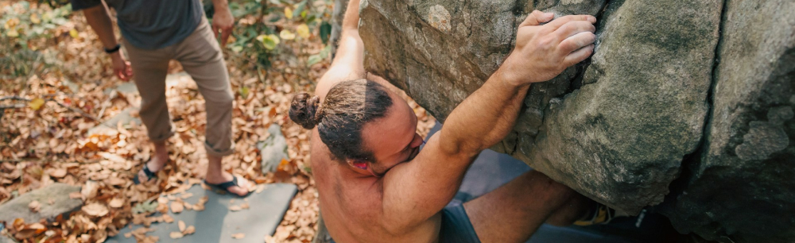

Getting started with Bouldering
How to get started
Unlike many outdoor sports, getting started with bouldering is surprisingly simple. All you need are some climbing shoes, chalk, and a positive attitude—most gyms even rent the equipment for your first sessions. No prior experience or complex gear required!
Know Before You Go
Before you start climbing, learn proper falling technique and always check your landing zone. Taking basic safety precautions and learning gym etiquette will help ensure a fun and injury-free experience.
The simple steps to getting started
- Find a bouldering gym near you.
- Rent or invest in a pair of climbing shoes.
- Learn basic bouldering techniques.
- Start with easy routes and gradually increase difficulty.
- Join a bouldering community or club.
